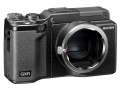

器材库 > 不可换镜头数码相机 > GXR MOUNT A12

规格总览
发布日期
2011-08-05
厂家推荐价格
65,000.00 （日元）
防水
否
影像规格
影像传感器
CMOS
影像传感器尺寸
23.6×15.7mm
总像素
1290万
有效像素
1230万
影像处理器
GR EngineIII影像处理引擎
静态图像尺寸
[6:9]4288×2416 [4:3]3776×2832 [3:2]4288×2848 [1:1]2848×2848
静态图像格式
JPEG, RAW
画幅比
3:2, 4:3, 16:9, 1:1
短片尺寸
1280x720@24fps
短片格式
AVI
镜头和对焦
对焦模式
多点自动对焦（对比度自动对焦方式）和单点自动对焦（对比度自动对焦方式）；手动对焦；抓拍；无限远（对焦点锁定及自动对焦辅助）
AF辅助灯
有
手动对焦
支持
曝光控制
测光模式
中央重点测光, 多分区评价测光, 点测光
曝光模式
P（程序自动曝光）, A（光圈优先自动曝光）, S（快门速度优先自动曝光）, M（手动测光曝光）, 移动捕捉功能
快门速度
静态图像：180 - 1/4000秒；短片：1/30 -1/2000秒
曝光补偿
±4EV以1/3或1/2EV级调整
自动包围曝光
± 2档，以1/3EV或1/2EV为增量
ISO感光度
200, 320, 400, 640, 800, 1000, 1250, 1600, 2000, 3200, 高ISO感光度自动, 自动, 250, 500, 2500
白平衡
多云, 白炽灯, 自动, 手动, 户外, 光管, 白平衡包围
自拍
10秒, 2秒
连拍
4fps
拍摄模式
自动、程序平移、光圈优先、快门优先、手动、场景（短片、肖像、运动、风景、夜景、扭斜校正）、我的设置
闪光灯
内置闪光灯
弹出式
闪光模式
自动, 慢速同步, 减轻/消除红眼, 关闭, 手动, 开启
闪光补偿
±2EV以1/3或1/2EV级调整
取景规格
LCD类型
VGA LCD
LCD尺寸
3.0英寸
LCD像素
92万
文件输入/输出
内置存储容量
86 MB
存储卡
SD/SDHC
数据接口
USB2.0
视频/音频接口
AV 输出, HDMI Mini 输出
配件端口
热靴, 脚架螺丝孔
电源
电池
DB-90
续航能力
可拍摄约330张照片
外观
颜色
黑色
尺寸
120.0×70.2×45.7mm
重量
370g
其它
工作温度
0-40℃
工作湿度
低于或等于85%
附件
USB 连接线，AV连接线，CD-ROM，手带，可充电式锂离子电池，电池充电器，镜头盖，连接器盖，软皮袋，使用说明书 (相机用户指南)
该产品暂无存档的网友点评
产品图 / 样片
评测 / 相关文章
该产品暂无存档的评测文章
相关文章
- ［资讯］理光公布GXR最新固件Ver. 1.51 （存档）
- ［资讯］理光发布第五个GXR功能增强固件更新包 （存档）
- ［资讯］理光将推出1600万像素GXR M接口模块 （原站已下线）
- ［影像］GXR MOUNT A12转接徕卡镜头样片赏析 （原站已下线）
- ［行情］镜头人气榜2011年第三十六期 （存档）
- ［资讯］理光GXR MOUNT A12 （原站已下线）